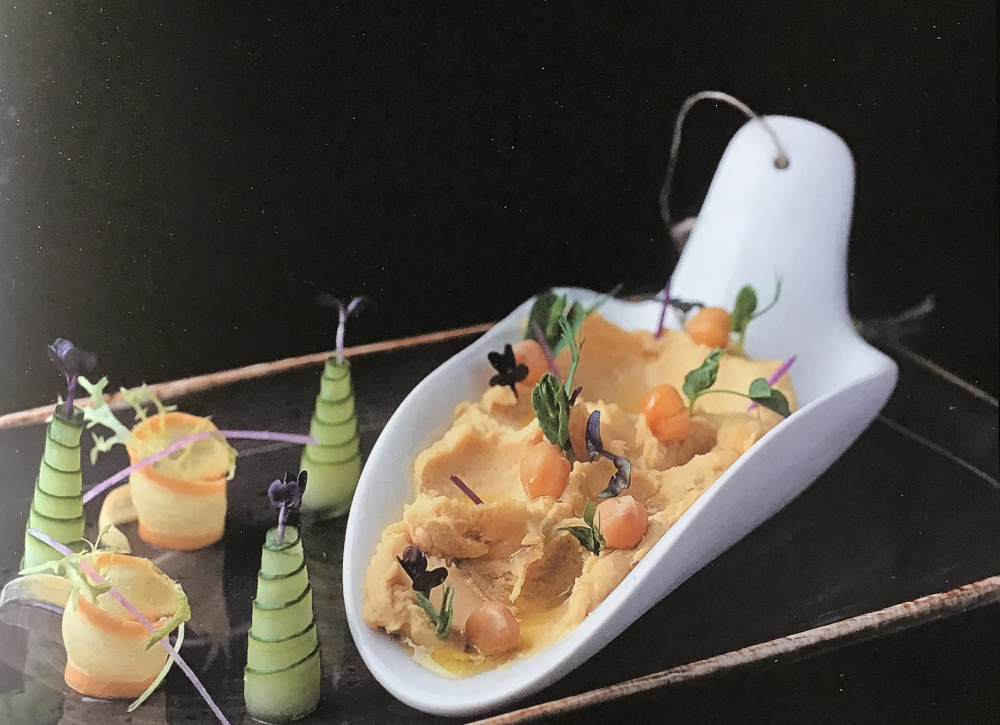

Смажені банани-чилі в беконі з сиром дорблю
 Інгредієнти:
Інгредієнти:
- Банани, що трохи не достигли - 2 шт.
- Бекон - 250 г
- Сир дорблю - 50 г
- Свіжий чилі перець - 1 шт.
- Шнітт-цибуля - 3 пера
- Соєвий соус - 2 ст. л.
- Лимонний сік - 1 ч. л.
- Банани нарізаємо рівними шматочками, шириною 3 сантиметри.
- Маринуємо їх в соєвому соусі та чилі, скроплюємо лимонним соком.
- Загортаємо у слайси бекону і закріплюємо шпажкою.
- Обсмажуємо на сковорідці на середньому вогні до хрумкої скоринки і обережно витягаємо шпажку.
- Зверху викладаємо дорблю та прикрашаємо слайсами чилі та перами шнітт-цибулі.
Брускети з анчоусами, в'яленими томатами та сиром моцарела
Брускети з анчоусами, в'яленими томатами та сиром моцарела
Брускети з анчоусами, в'яленими томатами та сиром моцарела
Брускети з анчоусами, в'яленими томатами та сиром моцарела
 Інгредієнти:
Інгредієнти:
- Хліб - 3 скибочки
- Цибуля - 1/2 шт.
- Консервовані анчоуси -45 г
- Сир моцарела -60 г
- В'ялені томати - 15 г
- Гренадин - 2 ст. л.
- Білий винний оцет - 1 ст. л.
- Вода - 3 ст. л.
- Оливкова олія - 1 ст. л.
- Гілочка чебреця, розмарина
- Гренадин, винний оцет і воду доведіть до кипіння.
- Отриманним маринадом залийте цибулю, нарізану тонкими кільцями, і залиште на 15 хв.
- Скибочки хліба засмажте у тостері чи духовці до хрусткої скоринки.
- Оливкову олію змішайте з подрібненим чебрецем і розмарином і скропіть хліб.
- Викладіть анчоуси, сир, томати на грінки.
- Поставте у духовку, розігріту до 200 градусів, на 3-5 хв., щоб розплавився сир.
- Викладіть брускети на тарілку та прикрасьте маринованою цибулею, томатами й листями свіжого базиліку.
align="center" >Брускерела
Хумус
 Інгредієнти:
- Нут - 250 г
- Кунжут - 50 г
- Часник - 1 зубчик
- Оливкова олія - 2 ст. л.
- Лимон - 1/2 шт.
- Сіль, перець за смаком
- Нут попередньо замочіть у холодній воді на ніч.
- Варіть 2-3 год., після чого злийте рідину в чашку та відставте її.
- Збийте нут блендером у пюре, поступово додаючи рідину.
- Обсмажте кунжут і збийте його з часником за допомогою блендера в пасту.
- Додайте оливкову олію та сік лимона.
- Потім перемішайте пюре з кунжутною пастою, приправте сіллю, перцем і протріть через дрібне сито.
- Подавайте з оливковою олією та слайсами моркви та огірка.